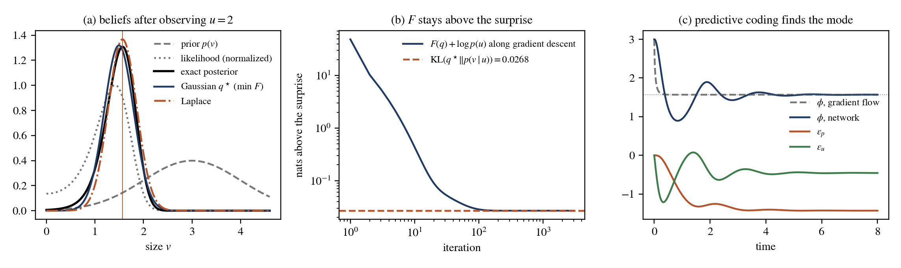
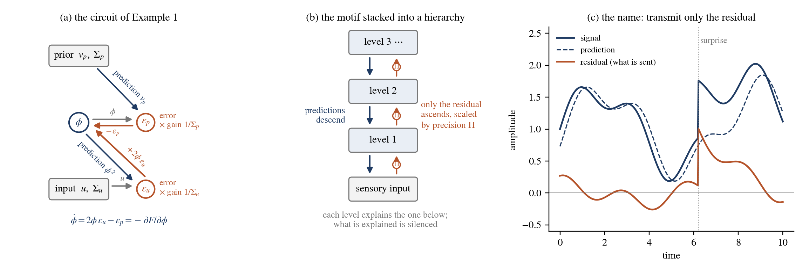
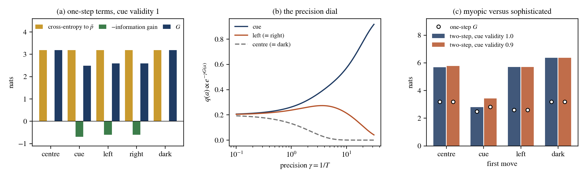
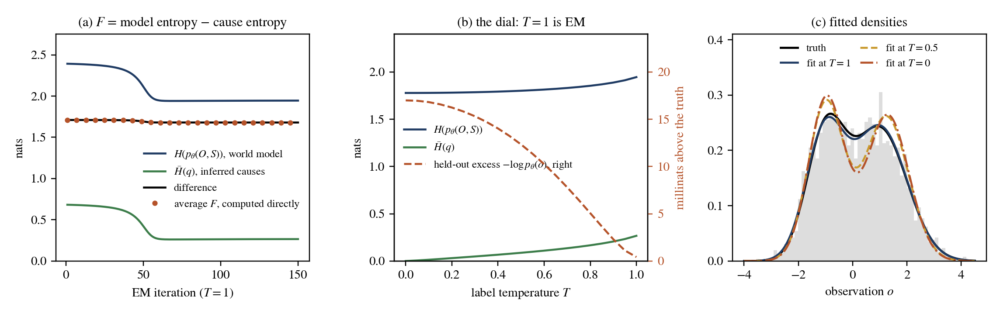
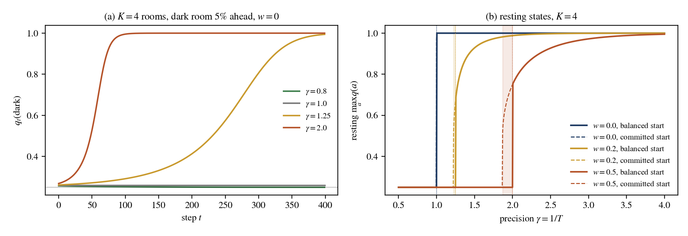

10 From Entropy-Based Learning to the Free-Energy Principle
The free-energy principle (FEP) is the most ambitious claim in this neighbourhood of ideas: that perception, learning, action, and — in its strongest form — the persistence of living things are all one optimization. It was developed in theoretical neuroscience, largely by Friston and collaborators (Friston 2005, 2010; Friston et al. 2006), and it is usually presented in a vocabulary of its own. This chapter examines the connection of the free-energy principle in the terms and concepts developed throughout this book. Some of the FEP is an identity with material we have already derived: it is Equation 5.2 at \(T = 1\), read in a particular way. Some of it is a correspondence, close enough to be illuminating but not a theorem. Other aspects — such as the physics of Markov blankets and non-equilibrium steady states — stand apart from the framework developed in this book, and we will make that distinction clear.
The reason to spend a chapter on this is not completeness. It is that the FEP supplies the one ingredient the preceding chapters leave implicit. Chapters 5 through 7 organize methods as an inner free-energy problem under an outer criterion, and that criterion either fits the data (Chapter 5), or sharpens the model’s own output (Chapter 6), or chooses which features to measure and which assignments to commit to (Chapter 7). All three take the data as given. Active inference does not: its outer problem chooses what to observe. We propose that this constitutes a third distinct type of outer problem, as described in Section 7.2.1—precisely the kind that has been absent from the rest of the book. Making this explicit serves to clarify the structure and implications on both fronts.
Because the principle will be unfamiliar to many readers of this book, the chapter is arranged in four parts. The first, Section 10.1, presents the FEP on its own terms and in its own notation — where it came from, what it says about perception, learning, and action, and the physical claims that were later built on it — with two worked examples, of perception and of planning. The second, Section 10.2, surveys the developments of the field since 2019, critiques included. The third section, Section 10.3, acts as a bridge: it clarifies which aspects of the free-energy principle are mathematically identical to the free energy discussed in Chapter 3, which aspects are related but only by analogy, and which fall outside both categories. To illustrate these connections, it adds two additional examples—one focused on learning processes, and another on the case where preferences themselves are subject to learning. The fourth, Section 10.4, collects what the translation establishes and what it leaves open. The numbers in all four examples come from code/fep-examples.py.
10.1 Foundations of the free-energy principle
10.1.1 Origins
The idea behind the FEP is older than the name. Helmholtz described perception as unconscious inference about the causes of sensations, and the FEP begins by taking that description literally (Friston 2005). Its direct predecessors in machine learning are the Helmholtz machine (Dayan et al. 1995) and the free-energy view of EM (Neal and Hinton 1998), both of which read the evidence lower bound as a negative variational free energy, as the table of Chapter 3 records. What Friston, a neuroscientist at University College London, added was the claim that the brain — and, later, any system that persists — minimizes this quantity, and that perception, learning, and action are the three ways of doing so.
The principle took shape in roughly four steps. i) In 2005, Friston observed that perceptual inference and perceptual learning both rest on minimizing the brain’s free energy, with learning arising from synaptic changes that minimize the free energy averaged over the stimuli encountered (Friston 2005); in 2006, with Kilner and Harrison, he termed this a free-energy principle for the brain (Friston et al. 2006). ii) In 2007, the variational Laplace method gave a practical algorithm for computing the free energy under a Gaussian approximation (Friston et al. 2007). iii) Two reviews of 2009–2010 promoted it to a unified brain theory (Friston 2009, 2010), and “Action and behavior” of 2010 brought in action, reading motor control as the fulfilment of prior expectations about proprioceptive sensations (Friston et al. 2010). iv) From 2012 on, active inference on discrete state spaces recast optimal control as a pure inference problem, with cost functions absorbed into prior beliefs about state transitions and terminal states (Friston, Samothrakis, et al. 2012); it then introduced the expected free energy and epistemic value (Friston et al. 2015), learning and habits (Friston et al. 2016), and a process theory for the brain (Friston et al. 2017). The textbook is Active Inference by Parr, Pezzulo, and Friston (Parr et al. 2022); a mathematical review is that of Buckley et al. (Buckley et al. 2017), and an introductory tutorial is that of Bogacz (Bogacz 2017), whose running example we adopt below.
In outline, the principle says the following. A system that persists must keep its sensory exchanges with the environment within bounds, i.e., it must avoid surprising sensations, where the surprise of an observation \(o\) under a model is \(-\log p(o)\). Surprise cannot be evaluated directly, because the model has hidden causes that would have to be integrated out, so the system minimizes a tractable upper bound on it, the variational free energy. It has three ways of doing so: it can change its beliefs about the causes, which is perception; it can change the model, which is learning; or it can change the sensations themselves by acting on the world, which is action. The quantities behind these three sentences are developed in the next four subsections; the physical claim that makes “persists” into a theorem, by way of Markov blankets and steady states, is set out in Section 10.1.6.
10.1.2 Variational free energy and perception
The FEP starts from a generative model, namely a joint distribution \(p(o, s) = p(s)\, p(o \mid s)\) over observations \(o\) and their hidden causes \(s\), which the agent is assumed to embody. Given an observation, the agent cannot in general compute the posterior \(p(s \mid o)\) or the evidence \(p(o)\), so it maintains an approximate belief \(q(s)\), termed the recognition density, and scores it by the variational free energy
\[ \begin{aligned} F[q; o] \;&=\; \mathbb{E}_{q(s)}\big[-\log p(o, s)\big] - H[q] \\ &=\; \mathrm{KL}\big(q(s) \,\Vert\, p(s \mid o)\big) - \log p(o) \\ &=\; \underbrace{\mathrm{KL}\big(q(s) \,\Vert\, p(s)\big)}_{\text{complexity}} \;-\; \underbrace{\mathbb{E}_{q(s)}\big[\log p(o \mid s)\big]}_{\text{accuracy}} \;\;\ge\;\; -\log p(o) . \end{aligned} \tag{10.1}\]
The three lines read “energy minus entropy”, “divergence plus surprise”, and “complexity minus accuracy”. The second shows that \(F\) is an upper bound on the surprise \(-\log p(o)\), with equality if and only if \(q\) is the exact posterior, so that minimizing \(F\) does two things at once: it brings \(q\) to the posterior, which is perception, and it brings \(F\) down to the surprise, which gives a computable bound on the model evidence — the negative of the evidence lower bound of Chapter 3. We note at once that what the FEP minimizes is the surprise of particular observations and not an entropy; the two are linked by a sentence of Friston’s — under ergodic assumptions, the long-term average of surprise is entropy (Friston 2013) — to which we return in Section 10.1.6 and Section 10.3.9.
Example 1 (perception). We take the example of Bogacz’s tutorial (Bogacz 2017): an animal infers the size \(v\) of a food item from an observed light intensity \(u\), with the prior \(v \sim \mathcal{N}(3, 1)\), the likelihood \(u \mid v \sim \mathcal{N}(v^2, 1)\), and the observation \(u = 2\). The model is nonlinear and the posterior has no closed form, but in one dimension it can be computed on a fine grid. The surprise is \(-\log p(u) = 3.2368\) nats, and the posterior has mean \(1.4797\), standard deviation \(0.3425\), and mode \(1.5675\). Gradient descent on Equation 10.1 over the Gaussian family \(q = \mathcal{N}(m, s^2)\), started at the prior, converges to \(m^\star = 1.4933\) and \(s^\star = 0.3025\) with \(F^\star = 3.2636\). The excess of \(F^\star\) over the surprise, \(0.026828\) nats, agrees with \(\mathrm{KL}(q^\star \Vert p(v \mid u))\) to within \(10^{-13}\), as the second line of Equation 10.1 says it must. At the starting point the free energy is \(51.92\) nats, since the prior predicts an intensity \(v^2 \approx 9\), far from the observed value 2 (Figure 10.1 a, b).

code/fep-examples.py.
10.1.3 Predictive coding, precision, and attention
Predictive coding is the process theory that implements the minimization in neural tissue, as message passing between units that carry states and units that carry prediction errors (Rao and Ballard 1999; Friston 2005). The name is older than the principle, and the idea is best seen where it started. In the engineering of signals, Elias proposed to transmit not a signal but the difference between the signal and a prediction of it formed from its own past: the difference is smaller and cheaper to send, and a receiver that forms the same prediction loses nothing (Elias 1955). The channel is then quiet as long as the world behaves as expected and speaks only when something unpredicted happens, as in Figure 10.2 (c). Srinivasan, Laughlin, and Dubs read the centre–surround organization of early visual neurons in the same way: the surround forms a prediction of the centre from its neighbours, the cell transmits the residual, and the best weighting of the prediction depends on the signal-to-noise ratio of the input (Srinivasan et al. 1982). Mumford proposed that the cortex as a whole is organized like this, with the feedback from a higher area carrying its reconstruction of the activity in the lower area and the feedforward path carrying only what remains unexplained (Mumford 1992), and Rao and Ballard built the hierarchical network and trained it on natural images (Rao and Ballard 1999). Their best-known result is the end-stopping of visual neurons, i.e., a unit that responds to a short bar responds progressively less when the bar is extended beyond its receptive field: the long bar is predicted from its surroundings, so there is little residual left to report.
Under the FEP this becomes a circuit with two kinds of units at every level of a hierarchy (Figure 10.2 a, b). State units hold the current estimate of the causes at their level and send a prediction to the level below; error units at that lower level compare the prediction with what is actually there and send back the difference, multiplied by a gain. Three rules govern the traffic: i) predictions descend and errors ascend; ii) an error that has been explained is silenced, so that at equilibrium only the unexplained part of the input travels upward, namely the news; and iii) a state unit moves in the direction that reduces the errors it receives, from below and from above. The picture to keep is of a hierarchy in which each level tries to quieten the level below. Perception in this scheme is not a reconstruction of the scene assembled upward from the retina but a guess issued downward and corrected by whatever it failed to predict; what climbs the hierarchy is a report of the misfit, not a copy of the world. The everyday analogy is proofreading one’s own text: a fluent reader predicts the next word and looks only where the prediction fails, which is why a typo in a familiar word is so easily missed, and why it is found when one reads slowly, i.e., when the gain on the sensory error is turned up. Anatomically, the FEP assigns the errors to the superficial pyramidal cells that send forward connections and the predictions to the deep pyramidal cells that send backward connections (Friston 2005; Bastos et al. 2012); the general scheme for hierarchies of dynamical models in continuous time is given in (Friston 2008).

code/fep-predictive-coding.py.
The rules are not an extra hypothesis; they are the gradient of the free energy read as a wiring diagram. For Example 1, with a point estimate \(\phi\) in place of \(q\), the free energy of Equation 10.1 is, up to a constant, a sum of two squared and precision-weighted errors, \(F(\phi) = (\phi - v_p)^2/(2\Sigma_p) + (u - \phi^2)^2/(2\Sigma_u)\), and gradient descent on it is exactly Bogacz’s network: three nodes, the state \(\phi\) and the prediction errors \(\varepsilon_p = (\phi - v_p)/\Sigma_p\) and \(\varepsilon_u = (u - \phi^2)/\Sigma_u\), with the dynamics \(\dot\phi = 2\phi\, \varepsilon_u - \varepsilon_p = -\partial F/\partial\phi\) (Bogacz 2017). Each error unit needs only the prediction from above and the signal from below, and the state unit needs only the two errors and the local slope \(2\phi\) of its own prediction. This locality is the point of the construction: no unit knows the posterior, yet the network finds it. Numerically \(\phi\) converges to \(1.5675\) and the error nodes to \(\varepsilon_p = -1.4325\) and \(\varepsilon_u = -0.4570\), which are the analytic values at the mode (Figure 10.1 c). The network therefore computes the mode of the posterior, not its mean, and the uncertainty has to be supplied separately by the Laplace approximation (Friston et al. 2007): the curvature at the mode gives \(s = 0.2918\), which understates both the posterior standard deviation \(0.3425\) and the \(0.3025\) of the best Gaussian.
The errors are weighted by their precisions, i.e., the inverse variances \(1/\Sigma_p\) and \(1/\Sigma_u\), and a precision is simply the gain of an error unit: it decides how loudly a given misfit is reported. Since the state unit balances the two reports, what matters for the estimate is their ratio. Specifically, in Example 1 the mode is \(1.5675\) at equal precisions; making the sensory channel four times more precise moves it to \(1.4601\), towards the \(\sqrt{u} = 1.4142\) that the data alone would give, and making the prior four times more precise moves it to \(1.8171\), towards the prior mean \(3\), and the same \(1.8171\) is obtained by leaving the prior alone and making the sensory channel four times less precise. The FEP reads attention as inference about precision (Feldman and Friston 2010): a cue that a sensory channel is reliable raises the precision of its errors, and the state units then follow that channel more closely. In the circuit this is a change of gain, not a change of wiring, and it is, in effect, the knob that Srinivasan et al. had already found the retina turning with the signal-to-noise ratio. Notably, predictive coding is the process theory for continuous states; the discrete-state schemes of Section 10.1.5 minimize the same free energy with a different message passing (Friston et al. 2017). For the broader view of predictive processing in cognitive science, see the review of Clark and the introduction of Sprevak and Smith (Clark 2013; Sprevak and Smith 2023).
10.1.4 Learning and model selection
Learning uses the same quantity. Under the FEP, parameters are slowly varying hidden variables, and beliefs about them are updated by minimizing the free energy averaged over observations. In the standard discrete-state scheme the likelihood matrix \(\mathbf{A}\) and the transition matrices \(\mathbf{B}\) carry Dirichlet priors, and learning accumulates their concentration parameters after each observation (Friston et al. 2016; Da Costa et al. 2020); in the limit of point estimates this is EM, with the E-step minimizing over the hidden states and the M-step over the parameters (Neal and Hinton 1998). In the third line of Equation 10.1 the complexity term penalizes departures from the prior and the accuracy term rewards the fit, so the free energy is also a computable bound on the negative log model evidence, which serves for model comparison. Structure learning in active inference adds hidden-state slots for novel concepts and uses Bayesian model reduction to reset them in favour of a simpler model with higher evidence (Smith et al. 2020).
10.1.5 Action: active inference and the expected free energy
Action enters the FEP in two ways. i) In continuous-state formulations it minimizes \(F\) directly, by changing the observations so that they conform to predictions — motor control as the fulfilment of prior expectations about proprioception (Friston et al. 2010). ii) In discrete-state formulations the agent infers policies \(\pi\), i.e., sequences of actions, scoring them by the expected free energy (Friston et al. 2015, 2017; Da Costa et al. 2020),
\[ \begin{aligned} G(\pi) \;&=\; \underbrace{\mathrm{KL}\big(q(o \mid \pi) \,\Vert\, \tilde p(o)\big)}_{\text{risk}} \;+\; \underbrace{\mathbb{E}_{q(s \mid \pi)}\, H\big[p(o \mid s)\big]}_{\text{ambiguity}} \\ &=\; \underbrace{-\,\mathbb{E}_{q(o \mid \pi)}\big[\log \tilde p(o)\big]}_{-\,\text{pragmatic value}} \;-\; \underbrace{I_\pi(S; O)}_{\text{epistemic value}} , \end{aligned} \tag{10.2}\]
where \(q(o \mid \pi) = \mathbb{E}_{q(s \mid \pi)} p(o \mid s)\) is the predicted distribution of outcomes, \(\tilde p(o)\) the preferences, termed prior preferences in the literature, and \(I_\pi(S; O) = H[q(o \mid \pi)] - \mathbb{E}_{q(s \mid \pi)} H[p(o \mid s)]\) the mutual information between hidden states and outcomes, i.e., the expected information gain. The first line reads “risk plus ambiguity” and the second “minus pragmatic value minus epistemic value”; exploration and exploitation thus sit inside one quantity, and Friston et al. note the formal consistency with the InfoMax principle and with risk-sensitive KL control themselves (Friston et al. 2015). The posterior over policies is a softmax,
\[ q(\pi) \;=\; \sigma\big(\log E(\pi) - \gamma\, G(\pi)\big) , \tag{10.3}\]
with \(E\) a prior over policies and \(\gamma\) a precision. Da Costa et al. call \(\gamma\) an inverse temperature that denotes the confidence in selecting a policy (Da Costa et al. 2020); in the tutorial of Smith et al. the prior \(E\) reflects the number of times a policy has previously been chosen, which models habits, and \(\gamma\) has a prior of its own and is inferred (Smith et al. 2022). Experimentally, midbrain activity tracks trial-by-trial model-based estimates of precision (Schwartenbeck et al. 2015). It is worth being careful about what Equation 10.2 is and is not: it is not simply the free energy of the future (Millidge et al. 2021), and several non-equivalent objectives have been proposed for the same role (Parr and Friston 2019; Sajid, Ball, et al. 2021; Champion et al. 2024); we return to this in Section 10.2.
Example 2 (a T-maze with a cue, and the dark room). A hidden context \(c \in \{L, R\}\) decides whether a reward lies in the left or the right arm, with prior \((1/2, 1/2)\). The agent may stay at the centre, visit a cue that reveals the context with validity \(v\), enter an arm (reward or loss with probability \(0.98\), after which it cannot leave), or enter a dark room (after which it cannot leave). The preferences are \(\tilde p \propto e^{C}\) with \(C = +3\) for the reward, \(-3\) for the loss, and 0 otherwise, so that \(\tilde p\) is \(0.8322\) for the reward, \(0.0021\) for the loss, and \(0.0414\) for each neutral outcome.
| Action | Cross-entropy | \(H[q(o)]\) | Ambiguity | Risk | Information gain | \(G\) |
|---|---|---|---|---|---|---|
| centre | 3.1837 | 0 | 0 | 3.1837 | 0 | 3.1837 |
| cue, \(v = 1\) | 3.1837 | 0.6931 | 0 | 2.4905 | 0.6931 | 2.4905 |
| cue, \(v = 0.9\) | 3.1837 | 0.6931 | 0.3251 | 2.4905 | 0.3681 | 2.8156 |
| left (= right) | 3.1837 | 0.6931 | 0.0980 | 2.4905 | 0.5951 | 2.5886 |
| dark | 3.1837 | 0 | 0 | 3.1837 | 0 | 3.1837 |
Three features of Table 10.1 are worth noting. First, the symmetry of the preferences makes the cross-entropy — minus the pragmatic value — equal to \(3.1837\) nats for every action, so the first move is decided by the epistemic term alone. Second, the two actions with the lowest outcome entropy, the centre and the dark room, have the highest expected free energy. This is the precise form of the answer to the dark-room objection. Critics asked why an agent that minimizes surprise does not retreat into a dark and unchanging room; Friston, Thornton, and Clark replied that average surprise is a function of the sensations and of the agent predicting them, whereas the entropy that a dark room minimizes is a function of the sensations alone (Friston, Thornton, et al. 2012), and Schwartenbeck et al. added that minimizing surprise leads naturally to exploration and to novelty bonuses (Schwartenbeck et al. 2013). In Table 10.1 the reply becomes an identity: the risk term \(\mathrm{KL}(q(o \mid \pi) \Vert \tilde p) = \mathrm{CE} - H[q(o \mid \pi)]\) subtracts the outcome entropy from the expected surprise, so an agent minimizing Equation 10.2 does not minimize the entropy of its outcomes, and the dark room is chosen only if the preferences themselves favour it. Third, the epistemic term is sensitive to reliability: with a perfect cue the information gain is \(\log 2 = 0.6931\) against \(0.5951\) for an arm, so the agent looks at the cue; at a validity of \(0.9\) the ambiguity rises to \(0.3251\) and the one-step choice flips to entering an arm. The precision \(\gamma\) sets how deterministic the choice is: with a reliable cue, the probability of visiting the cue under Equation 10.3 with a flat \(E\) is only \(0.262\) at \(\gamma = 1\), \(0.404\) at \(\gamma = 4\), and \(0.706\) at \(\gamma = 16\) (Figure 10.3 b).

code/fep-examples.py.
That last flip is an artefact of myopia, and it is worth saying so, because the one-step expected free energy is often presented as the whole story. Sophisticated inference computes \(G\) recursively: the expected free energy of the next action is its own risk and ambiguity plus the average expected free energy of the beliefs that would follow under counterfactual outcomes and subsequent actions, the latter weighted by a softmax of their own \(G\), so that it is a tree search over beliefs about beliefs (Friston, Da Costa, Hafner, et al. 2021). In the high-precision limit the two-step value is \(G(a_1) + \mathbb{E}_{o_1} \min_{a_2} G(a_2 \mid o_1)\). Under that score, visiting the cue first is best at both validities — \(2.7942\) at \(v = 1\) and \(3.4344\) at \(v = 0.9\), against \(5.6742\) for staying at the centre, \(5.7049\) for entering an arm, and \(6.3674\) for the dark room — which corrects the one-step choice (Figure 10.3 c). By contrast, a score that adds two one-step values of \(G\) under the same prior belief selects “cue, then cue again” (\(4.9811\)) at \(v = 1\) and “left, then left” (\(5.1771\)) at \(v = 0.9\), because it does not let the second step use the first observation. This matches the result of Da Costa et al.: the standard scheme is Bellman optimal for a planning horizon of one and not beyond, whereas sophisticated inference is Bellman optimal on any finite horizon (Da Costa et al. 2023).
10.1.6 Markov blankets, steady states, and Bayesian mechanics
The most ambitious part of the FEP is not an algorithm but a physical claim about existence. In “Life as we know it”, Friston argues that if a set of dynamical systems is coupled only by short-range forces, then remote states are conditionally independent, which induces a Markov blanket separating internal from external states; the internal states then appear to minimize a free-energy functional of the blanket states, i.e., appear to infer the external world. He goes on to argue that, since the long-term average of surprise is an entropy, minimizing free energy by selectively sampling the world places an upper bound on the entropy of the sensory states, which in his words enables biological systems to resist the second law of thermodynamics (Friston 2013). Kirchhoff et al. nest the construction into blankets of blankets (Kirchhoff et al. 2018), and Ramstead et al. extend it to the capacity of living systems to avoid decay, in answer to Schrödinger’s question (Ramstead et al. 2018).
After 2019 this part developed into Bayesian mechanics. Starting from a Langevin equation, sparse coupling yields a particular partition, and the paths of the internal states of a particle obey a principle of least action which, read teleologically, maximizes the marginal likelihood (Friston 2019; Friston, Da Costa, Sajid, et al. 2023); “strange” particles also infer their own actions (Friston, Da Costa, Sakthivadivel, et al. 2023). Da Costa et al. give a more careful treatment for stationary processes, in which the internal states appear to perform variational inference and the active states can be read as performing active inference, covering classical stochastic control such as PID control (Da Costa et al. 2021). Ramstead et al. distinguish path-tracking, mode-tracking, and mode-matching mechanics and examine a duality between the FEP and the constrained maximum entropy principle (Ramstead et al. 2023); Sakthivadivel argues that for a class of constrained dynamics the inference is equivalent to gradient ascent on a Shannon entropy functional (Sakthivadivel 2022); a quantum-information version is due to Fields et al. (Fields et al. 2022).
This is also where the controversy concentrates, and the critiques are taken up in Section 10.2.1. Two points matter for what follows. The mathematics of Section 10.1.2 to Section 10.1.5 does not depend on the physical assumptions about blankets and steady states; and, conversely, the physical claims do not follow from the entropy-based learning of this book, as we explain in Section 10.3.9.
10.1.7 A map of the principle
The FEP therefore operates at several levels at once, and much of the confusion around it comes from not saying which level is meant. Table 10.2 lists the levels, the object and the quantity minimized at each, and the counterpart in this book, which Section 10.3 establishes row by row.
| Level | Object in the FEP | Quantity minimized | Counterpart in this book |
|---|---|---|---|
| perception | belief \(q(s)\) | \(F[q; o]\), Equation 10.1 | Equation 5.2 at \(T = 1\) with \(h = p(s)\); Section 10.3.1 |
| predictive coding | mode \(\phi\), precisions | \(-\log p(o, \phi)\), plus curvature | the \(T \to 0\) end of the dial with a Laplace correction; Section 10.3.2 |
| learning | parameters \(\theta\) | average \(F\) | maximum-entropy learning with missing data (Section 5.6.3); \(T = 1\) on the dial of Section 7.3.1; Section 10.3.3 |
| model selection | model \(m\) | \(F\) as a bound on \(-\log p(o \mid m)\) | Type I with a cost on the parameters; MDL (Section 7.1); Section 10.3.4 |
| planning | policy \(\pi\) | \(G(\pi)\), Equation 10.2 | firmness plus fairness (Section 6.3); Type III, proposed in Section 10.3.5 |
| policy selection | \(q(\pi)\), Equation 10.3 | \(\mathbb{E}_q[G] + \gamma^{-1} \mathrm{KL}(q \Vert E)\) | the Gibbs tilts Equation 6.2 and Equation 9.1; Section 10.3.6 |
| existence | steady-state density, blankets | average surprise | not derivable; a duality with maximum entropy; Section 10.3.9 |
10.2 Recent developments, 2019–2026
10.2.1 Critiques and replies
The principle has been examined closely since 2020, and the examination has drawn detailed replies; in our reading the exchange is still open. We group the main lines under three headings, state each position as its authors state it, and do not attempt to settle the matter. Two cautions apply throughout. First, much of the technical discussion concerns the 2013 formulation of Section 10.1.6, and the critics themselves note that the later formulations parametrize the variational density by different variables and carry a different interpretation (Biehl et al. 2021), so that an objection to one formulation is not automatically an objection to another. Second, the variational free energy of Section 10.1.2 and its use in perception and learning, which is most of what this chapter draws on, is not what is in dispute; the disputes concern the physical claims about blankets and steady states, the objective for planning, and the epistemic status of the principle as a whole.
i) Technical. Biehl, Pollock, and Kanai examine the formulation of “Life as we know it” and report that the definitions of the Markov blanket used in different papers are not equivalent, that the steps which rewrite the equations of motion of a system with a blanket are not generally correct without additional assumptions that had not been stated, and that the free-energy lemma, taken at face value, admits counterexamples; where the lemma does hold, they show, the variational density coincides with the conditional density of the steady state, and since the interpretation in terms of Bayesian inference hinges on this point they conclude that it is not sufficiently justified. They add that the problems they raise do not rule out that the general ideas behind the principle are worth pursuing (Biehl et al. 2021). Friston, Da Costa, and Parr take the observations as bearing on an early formulation and use them to set out the technical arguments that underwrite the principle, with the discussion focusing on solenoidal coupling between subsets of states in sparsely coupled systems and on the distinction between exact and approximate Bayesian inference (Friston, Da Costa, and Parr 2021). Aguilera et al. examine the simplest setting, weakly coupled linear stochastic systems, and report that the blanket condition and the restrictions on solenoidal flow are met only in a narrow region of parameter space, requiring an absence of perception–action asymmetry that they consider unusual for living systems, and that the step from the dynamics to variational inference relies on an equivalence between the dynamics of the average states and the average of the dynamics which does not hold in general even for linear systems; they conclude that more development is needed before the theory can be applied to living and cognitive systems (Aguilera et al. 2022). Friston replied in a comment (Friston 2022b), and Heins and Da Costa worked out, for Gaussian steady states and for linear and nonlinear dynamics alike, the conditions under which sparse coupling does or does not give rise to a Markov blanket (Heins and Da Costa 2022); the authors’ response moves the discussion toward what they term a confederation of Bayesian mechanics (Aguilera et al. 2023). The later formulations surveyed in Section 10.1.6 state their starting point as a partition defined by conditional independences that inherit from sparsely coupled dynamics (Friston, Da Costa, Sajid, et al. 2023; Da Costa et al. 2021; Ramstead et al. 2023); how far this meets the objections is, in our reading, still being worked out on both sides.
ii) Conceptual. Bruineberg et al. trace the Markov blanket from its use in Bayesian networks to its use in active inference, distinguish Pearl blankets, an epistemic tool for Bayesian inference, from Friston blankets, a construct meant to demarcate the physical boundary between an agent and its environment, and argue that the literature has not kept the two apart; only the second, they hold, can do metaphysical work, and it requires philosophical premises that the success of the mathematics does not by itself supply (Bruineberg et al. 2022b). The paper appeared as a target article with thirty-five commentaries, which take many different stances, and the authors’ reply (Bruineberg et al. 2022a). Raja et al. argue that the FEP generalizes Bayesian inference to all domains by way of the blanket formalism, which they term the Markov blanket trick, and that active inference presupposes successful perception and action instead of explaining them (Raja et al. 2021); Friston replied in a comment, and the authors responded (Friston 2022a; Raja et al. 2023). Colombo and Wright note that the FEP has been called a postulate, an unfalsifiable principle, a natural law, and an imperative, that its epistemic status is unclear, and that it might nevertheless afford a theoretical foundation for the relation between environment, life, and mind; they set out limits and prospects for it as a first principle in the life sciences (Colombo and Wright 2021). Andrews takes both the positive and the negative evaluations to date to have been largely in error: the FEP, on his account, is a model structure, i.e., a modelling language to which construals are added to make FEP models, so that demands that the principle itself be falsifiable or biologically realistic rest on a category error — the mathematics is not the territory (Andrews 2021).
iii) On the expected free energy. Millidge, Tschantz, and Buckley investigate where the expected free energy comes from and argue that it is not simply the free energy in the future: a functional that they take to be the natural extension of Equation 10.1 into the future actively discourages exploration, so that exploration does not directly follow from minimizing free energy ahead of time, and they develop the free energy of the expected future as an alternative objective (Millidge et al. 2021). Gottwald and Braun distinguish two notions of free energy in current models of intelligent agency, both of them applications of Bayesian inference to action selection, namely one that appears when trading off accuracy against uncertainty under a general maximum-entropy principle, and one that formulates action selection as minimizing the deviation of beliefs and policies from reference models, which is active inference (Gottwald and Braun 2020). The free energy of this book is of the first kind, as we make precise in Section 10.3.1; the subsequent theory of the expected free energy, which addresses part of the question raised by Millidge et al., is the subject of Section 10.2.2.
10.2.2 Planning and the theory of the expected free energy
The status of the expected free energy has nevertheless been clarified considerably. Parr and Friston compare two functionals: in the expected free energy, prior beliefs about outcomes are not part of the generative model but are absorbed into the prior over policies, whereas in the generalized free energy they become an explicit part of the model (Parr and Friston 2019). Da Costa et al. give a complete synthesis of active inference on discrete state spaces (Da Costa et al. 2020), and sophisticated inference and its Bellman optimality were discussed in Section 10.1.5. Sajid et al. compare active inference with reinforcement learning on the same environments and stress that reward can be treated as one more observation over which the agent has a preference (Sajid, Ball, et al. 2021). Champion et al. formalize the unification problem — deriving the various forms of the expected free energy from a single root definition — and find that in one setting all the forms are recovered, but that the root definition itself has no justification to date and admits only a limited class of preferences (Champion et al. 2024). Most recently, de Vries et al. and Nuijten et al. show that planning with the expected free energy can be written as variational free-energy minimization on a generative model augmented with epistemic priors (de Vries et al. 2025; Nuijten, van de Laar, et al. 2026); Nuijten et al. then rewrite the free energy of the augmented model as that of the predictive model plus explicit entropy corrections, and note that full planning also needs a correction that turns marginal inference into policy optimization (Nuijten, Lukashchuk, et al. 2026). Sweeney et al. develop the formal correspondences between expected-free-energy minimization and Bayesian decision theory, resource rationality, optimal control, reinforcement learning, rate–distortion theory, and maximum entropy (Sweeney et al. 2025).
10.2.3 Deep and scalable active inference
Taking active inference from small discrete problems to high-dimensional tasks has been the main engineering direction. Ueltzhöffer combines it with variational inference in deep generative models and with evolution strategies, and obtains goal-directed behaviour on the mountain-car problem (Ueltzhöffer 2018); Millidge approximates the key densities by deep networks, obtains performance comparable with common reinforcement-learning baselines on OpenAI Gym benchmarks, and notes the similarities with maximum-entropy reinforcement learning and with policy gradients (Millidge 2020); Tschantz et al. take the free energy of the expected future as the objective and balance exploration and exploitation on benchmarks with sparse, well-shaped, and no rewards (Tschantz et al. 2020); and Fountas et al. build deep agents with Monte Carlo tree search, a habitual network, and MC dropout (Fountas et al. 2020). Surveys are those of Mazzaglia et al., from the side of deep learning (Mazzaglia et al. 2022), and of Lanillos et al., for robotics (Lanillos et al. 2021); software includes pymdp (Heins et al. 2022) and RxInfer (Bagaev et al. 2023). The latest step is the renormalizing generative model, which generalizes partially observed Markov decision processes to include paths as latent variables and uses the renormalization group to build deep, scale-invariant models, applied to image classification, to the compression and generation of movies and music, and to Atari-like games (Friston et al. 2025); AXIOM uses object-centric core priors to accelerate the learning of games in the low-data regime (Heins et al. 2025). Closest to machine learning, Hafner et al. introduce the action–perception divergence, a single principle that covers representation learning, information gain, empowerment, and skill discovery, with agents that use perception to align their beliefs with the world and action to align the world with their beliefs (Hafner et al. 2020).
10.2.4 Experimental tests
The evidence concentrates on in vitro neural networks and on human decision-making. Isomura and Friston stimulated in vitro cortical cultures with stimulus trains of known statistical structure and found the recorded responses consistent with variational message passing (Isomura and Friston 2018); Isomura et al. show that a class of canonical neural networks with delayed modulation of Hebbian plasticity implicitly performs active inference (Isomura et al. 2022); and in 2023 Isomura et al. used in vitro networks of rat cortical neurons that separate two mixed hidden sources to confirm quantitative predictions — pharmacological up- and down-regulation of excitability disrupted the inference in the way that a change of prior would, and changes in effective synaptic connectivity reduced the variational free energy (Isomura et al. 2023). The DishBrain of Kagan et al. embedded in vitro neurons in a simulated game of Pong and reports learning within minutes (Kagan et al. 2022); its use of the word “sentience” drew a public response (Balci et al. 2023). In humans, Schwartenbeck et al. found with fMRI that midbrain activity tracks model-based estimates of precision (Schwartenbeck et al. 2015). These results test particular process theories rather than the principle as such, and Isomura et al. say so explicitly: empirical applications entail a commitment to a particular process theory (Isomura et al. 2023).
10.2.5 Generative AI and agents
Since 2023 the FEP literature has addressed generative AI directly. Pezzulo et al. argue that the generative models of living organisms are anchored to the body and the world: unlike the passive models learned by generative AI, they must capture and control the sensory consequences of action, which in their view is what understanding rests on (Pezzulo et al. 2024). Friston et al. read intelligence as the capacity to accumulate evidence for a generative model of one’s sensed world, i.e., self-evidencing in the sense of Hohwy (Hohwy 2016), and envisage an ecosystem of shared intelligence built on active inference (Friston et al. 2024). On the engineering side, Dutta et al. cast context acquisition by interactive AI agents — clarifying questions, retrieval, tool calls — as active inference: an inner step updates beliefs over a latent task state, and an outer decision selects the next action to minimize the expected free energy under a cost; in deterministic settings the epistemic term reduces to the expected information gain, and they benchmark frontier language models on an optimal-question-asking task (Dutta et al. 2026). We return to this structure, inference inside and the choice of data outside, in Section 10.3.7.
10.2.6 Timeline
The milestones of the principle, from its predecessors in machine learning to the developments of this section, are collected in Table 10.3.
| Year | Work | Point |
|---|---|---|
| 1995–1998 | Dayan et al.; Neal and Hinton | the evidence lower bound as a negative free energy (Dayan et al. 1995; Neal and Hinton 1998) |
| 1999 | Rao and Ballard | predictive coding in the visual cortex (Rao and Ballard 1999) |
| 2005–2007 | Friston; Friston, Kilner, and Harrison; Friston et al. | cortical responses; the FEP for the brain; variational Laplace (Friston 2005; Friston et al. 2006, 2007) |
| 2010 | Friston; Friston et al. | a unified brain theory; action and behaviour (Friston 2010; Friston et al. 2010) |
| 2012–2013 | Friston et al.; Friston | control without cost functions; the dark room; Markov blankets and life (Friston, Samothrakis, et al. 2012; Friston, Thornton, et al. 2012; Friston 2013) |
| 2015–2017 | Friston et al. | epistemic value; learning and habits; a process theory (Friston et al. 2015, 2016, 2017) |
| 2019–2021 | Parr and Friston; Da Costa et al.; Friston et al. | generalized free energy; the discrete synthesis; sophisticated inference (Parr and Friston 2019; Da Costa et al. 2020; Friston, Da Costa, Hafner, et al. 2021) |
| 2020–2023 | critiques and replies | two kinds of free energy; the technical critique and its reply; whence the EFE; linear systems and sparse coupling; Pearl and Friston blankets (Gottwald and Braun 2020; Biehl et al. 2021; Friston, Da Costa, and Parr 2021; Millidge et al. 2021; Aguilera et al. 2022; Heins and Da Costa 2022; Bruineberg et al. 2022b) |
| 2021–2023 | Bayesian mechanics | stationary processes; made simpler; the maximum-entropy duality (Da Costa et al. 2021; Friston, Da Costa, Sajid, et al. 2023; Ramstead et al. 2023) |
| 2022–2023 | in vitro tests | DishBrain; experimental validation (Kagan et al. 2022; Isomura et al. 2023) |
| 2023 | Da Costa et al. | Bellman optimality of sophisticated inference (Da Costa et al. 2023) |
| 2024–2025 | Pezzulo et al.; Friston et al.; Heins et al. | generative AI; renormalizing generative models; AXIOM (Pezzulo et al. 2024; Friston et al. 2025; Heins et al. 2025) |
| 2024–2026 | Champion et al.; de Vries et al.; Nuijten et al.; Sweeney et al.; Dutta et al. | the unification problem; planning as free-energy minimization with epistemic priors; formal equivalences; context acquisition by language-model agents (Champion et al. 2024; de Vries et al. 2025; Nuijten, van de Laar, et al. 2026; Nuijten, Lukashchuk, et al. 2026; Sweeney et al. 2025; Dutta et al. 2026) |
10.3 Connections to entropy-based learning
This concludes our review of the principle in its own language. Now, let us reinterpret it in the framework developed throughout this book, moving step by step along the levels summarized in Table 10.2. The point to hold on to, at the outset, is that the central translations below are identities, not analogies; where a translation is only a correspondence, or a reading of ours, Table 10.5 says so.
10.3.1 One free energy
The first line of Equation 10.1 is the free energy of Section 5.1.1 with a particular assignment of base measure and energy.
For a generative model \(p(o, s) = p(s)\, p(o \mid s)\), the variational free energy Equation 10.1 equals \(\mathcal{F}_T(q; E)\) of Equation 5.2 with \(h = p(s)\), \(E(s) = -\log p(o \mid s)\), and \(T = 1\). It also equals \(\mathcal{F}_1\) with a flat base measure and the energy \(E(s) = -\log p(o, s)\). In both readings the minimizer is the posterior \(p(s \mid o)\) and the minimum is \(-\log Z = -\log p(o)\). For a general temperature the two readings differ: the minimizers are \(q_T \propto p(s)\, p(o \mid s)^{1/T}\) and \(q_T \propto p(o, s)^{1/T}\), respectively.
The proof is a substitution: \(\mathbb{E}_q[-\log p(o \mid s)] + \mathrm{KL}(q \Vert p(s))\) is the third line of Equation 10.1, and \(Z = \int p(s)\, p(o \mid s)\, ds = p(o)\). Two remarks are worth making. First, in perception under the FEP, \(T = 1\) is not a dial that someone chooses; it is the point at which Bayes’ rule itself sits. Writing Bayes’ rule as a variational problem is an old result in statistics, which goes back to the Donsker–Varadhan formula, to Williams’ principle of minimum information, and to Zellner’s optimal information processing (Donsker and Varadhan 1975; Williams 1980; Zellner 1988); Giffin and Caticha process data and moment constraints simultaneously by maximum relative entropy (Giffin and Caticha 2007), which is the constrained and the free-energy form of Section 5.1.1 unified in Bayesian updating. Second, replacing the negative log-likelihood by a general loss, or the KL divergence by another divergence, gives general Bayesian updating and generalized variational inference (Bissiri et al. 2016; Knoblauch et al. 2022), i.e., the generalized sense of Section 5.6.3.
Notably, the two readings of Proposition 1 are not a technicality. They are the two ways of splitting a model into a base measure and an energy, and the rest of this section shows that the FEP uses both, at different levels, and that several of its apparent puzzles dissolve once one asks which split is in force. Proposition 1 also concerns the variational free energy only, and it is worth placing it in the distinction of Gottwald and Braun (Section 10.2.1). Their first kind, the free energy from constraints, is an energy traded against an entropy with a multiplier that is determined by a constraint, which is Equation 5.2; their second kind, the variational free energy, is an error measure between a trial distribution \(q\) and an unnormalized reference function \(\phi\), namely \(\mathbb{E}_q[-\log \phi] - H(q)\), introduced as a device for representing a normalization as an optimization problem, which is the first line of Equation 10.1 with \(\phi = p(o, s)\). They note that the two expressions are transformed into each other by \(\phi = h\, e^{-E/T}\), and insist that they nevertheless differ in method and motivation: the first presupposes a constrained quantity and a trade-off, the second presupposes neither (Gottwald and Braun 2020). Proposition 1 is that transformation at \(T = 1\), and its second reading is exactly their second kind. The free energy of this book is of the first kind; the expected free energy Equation 10.2 is a further object of the second kind, built for action selection, which is not the same object as Equation 10.1, and we come to it in Section 10.3.5.
10.3.2 Perception: two readings of the dial
Example 1 showed that predictive coding computes the mode of the posterior and not its mean, with the uncertainty supplied afterwards by the Laplace approximation. This is the first place where the distinction of Proposition 1 earns its keep. Predictive coding is the \(T \to 0\) end of the second reading, in which the energy is \(-\log p(o, s)\) and lowering the temperature concentrates the belief on the maximum a posteriori value without moving it.
Precision is a temperature. For a Gaussian likelihood, lowering the temperature of the likelihood term from 1 to \(T\) is the same as raising the sensory precision from \(1/\Sigma_u\) to \(1/(T\Sigma_u)\), since \(p(u \mid v)^{1/T} \propto \mathcal{N}(u; v^2, T\Sigma_u)\). This is the first reading of Proposition 1, in which the prior is the base measure and the dial of Chapter 3 acts on the likelihood alone. In Example 1 the mode of \(q_T \propto p(v)\, p(u \mid v)^{1/T}\) moves from \(1.817\) at \(T = 4\), towards the prior mean \(3\), through \(1.5675\) at \(T = 1\), to \(1.418\) at \(T = 0.02\), approaching the maximum-likelihood value \(\sqrt{2} = 1.4142\); under the second reading the mode stays at \(1.5675\) for every \(T\), while the mean moves from \(1.480\) at \(T = 1\) to \(1.566\) at \(T = 0.02\), towards the mode. Attention as inference about precision (Section 10.1.3) is, in our terms, inference about a likelihood temperature. Perception itself stays at \(T = 1\).
In the classification of Section 5.1, perception has only the levels i) and ii), representation and inference, with no learner: it is inference over a maximum-entropy model, and nothing is fitted.
10.3.3 Learning: minimax entropy at \(T = 1\)
We saw in Section 10.1.4 that learning under the FEP minimizes the same free energy, and that in the limit of point estimates it is EM. The question for this book is which outer problem that is. The answer is sharper than we expected.
Let the complete-data model \(p_\theta(o, s) \propto h(o, s) \exp\big(\boldsymbol{\lambda}^{\top} \mathsf{T}(o, s)\big)\) be an exponential family in the sufficient statistics \(\mathsf{T}\) with a uniform base measure \(h\). Given data \(o_1, \dots, o_n\) and any conditional distribution \(q(s \mid o)\), let \(\boldsymbol{\lambda}\) be the M-step fit to the completed data \(\hat p(o)\, q(s \mid o)\), i.e., \(\mathbb{E}_{\hat p q}[\mathsf{T}] = \mathbb{E}_{p_\theta}[\mathsf{T}]\). Then for every label temperature \(T \ge 0\),
\[ \frac{1}{n}\sum_{i=1}^{n} \Big\{ \mathbb{E}_{q(\cdot \mid o_i)}\big[-\log p_\theta(o_i, s)\big] - T\, H\big(q(\cdot \mid o_i)\big) \Big\} \;=\; H\big(p_\theta(O, S)\big) - T\, \overline{H(q)} , \tag{10.4}\]
where \(\overline{H(q)} = \frac{1}{n}\sum_i H\big(q(\cdot \mid o_i)\big)\). At \(T = 1\) the left-hand side is the average variational free energy Equation 10.1.
The proof is that of Equation 5.18. For a uniform \(h\) we have \(-\log p_\theta(o, s) = -\boldsymbol{\lambda}^{\top} \mathsf{T}(o, s) + \log Z(\boldsymbol{\lambda})\) up to a constant, so the cross-entropy on the completed data equals \(-\boldsymbol{\lambda}^{\top} \mathbb{E}_{\hat p q}[\mathsf{T}] + \log Z = -\boldsymbol{\lambda}^{\top} \mathbb{E}_{p_\theta}[\mathsf{T}] + \log Z = H(p_\theta)\); subtracting \(T\, \overline{H(q)}\) gives Equation 10.4. If the statistics also depend on representation parameters \(\theta'\), writing \(p^\star_{\theta', q}\) for the maximum-entropy model of the completed data and \(\ell_T\) for the label free energy Equation 7.5 gives
\[ \min_{\theta}\; \frac{1}{n}\sum_{i=1}^{n} \ell_T(\theta; o_i) \;=\; \min_{\theta',\, q} \Big\{ H\big(p^\star_{\theta', q}\big) - T\, \overline{H(q)} \Big\} , \tag{10.5}\]
whose \(T \to 0\) end is Equation 7.8, the classification likelihood, and whose \(T = 1\) end is the marginal likelihood, i.e., EM.
Proposition 2 is a direct consequence of Equation 5.18, and Equation 7.7, the decomposition of Hathaway (Hathaway 1986), is its counterpart on the side of the E-step; we claim no priority for either. What we want the reader to take from it is the reading. The average free energy is the entropy of the world model minus the entropy of the inferred causes. Learning under the FEP is therefore minimax-entropy learning whose outer problem minimizes the entropy of the world model — which is Type I of Section 7.2.1 — while the inner problem keeps the entropy of the causes at full weight. The interpolation between the two ends that Section 7.3.1 describes is exactly the \(T\) of Equation 10.4, and the FEP sits at one particular setting of it.
Example 3 (learning). We draw \(n = 2000\) samples from \(0.4\, \mathcal{N}(-1, 0.7^2) + 0.6\, \mathcal{N}(1, 1)\) and run EM at a label temperature \(T\), with the E-step \(q(s \mid o) \propto p_\theta(o, s)^{1/T}\) — a hard assignment at \(T = 0\) — and the M-step matching the moments of the completed data. At every temperature and every iteration the two sides of Equation 10.4 agree to within \(3.8 \times 10^{-15}\), and the objective is non-increasing to within rounding (Figure 10.4 a). At \(T = 1\), EM converges to \(\hat\pi = (0.399, 0.601)\), \(\hat\mu = (-1.034, 1.010)\), and \(\hat\sigma = (0.703, 0.991)\); the average free energy \(1.6791\) equals the training negative log-likelihood to within \(10^{-12}\), and it splits into a world-model entropy of \(1.9457\) minus a cause entropy of \(0.2666\). On 200,000 held-out samples the negative log-likelihood is \(0.4\) millinats above that of the true distribution. At \(T = 0\), which is classification EM (Celeux and Govaert 1992), the entropy of the world model falls to \(1.7782\) and that of the causes to zero, but the means are pushed apart and the variances shrink, \(\hat\mu = (-0.963, 1.291)\) and \(\hat\sigma = (0.657, 0.777)\), and the held-out negative log-likelihood is \(17.0\) millinats above the truth, against \(12.3\) at \(T = 0.5\) (Figure 10.4 b, c).

code/fep-examples.py.
This is what Section 7.3.1 predicts: a label temperature below one makes the label side commit, which is Type II, and it pays for the commitment in the fit of the density to the inputs. Learning under the FEP declines to make that trade.
One detail deserves mention, since it looks like a contradiction and is not. We said in Section 5.6.3 that directed graphical models fitted by maximum likelihood or EM are maximum-entropy learners without being maximum-entropy models, which is true of the marginal \(p_\theta(o)\). Proposition 2 says that at the level of the completed data, EM for an exponential-family mixture is a minimax-entropy learner. The two statements concern different sets of variables.
10.3.4 Model selection: Type I and description length
Model selection is the same story one level up. Recall that Section 7.1 starts from minimum description length: for a maximum-entropy model the description length equals the model’s own entropy, \(L(P_F) = S(P_F)\), so choosing features for the shortest description is Type I (Grünwald 2007; Feder 1986; Carcamo et al. 2025). Model selection under the FEP uses the free energy as a bound on the negative log model evidence (Section 10.1.4), and its complexity term for the parameters, \(\mathrm{KL}(q(\theta) \Vert p(\theta))\), is their description length. This reading is not new to the FEP: Hinton and van Camp read variational learning as minimizing the description length of the weights (Hinton and van Camp 1993), Hinton and Zemel read the cost of an autoencoder in terms of MDL and the Helmholtz free energy (Hinton and Zemel 1994), and Honkela and Valpola explain variational Bayesian learning through bits-back coding (Honkela and Valpola 2004).
In the language of this book, then, model selection under the FEP is Type I with a cost on the parameters: the budget of Section 7.1 is a number of features, whereas that of the FEP is counted in nats. The outer criteria differ slightly, in a way worth keeping straight. Type I minimizes \(S(P_F)\), the cross-entropy at the maximum-likelihood fit; the FEP minimizes a free energy that also carries the uncertainty about the parameters. When the parameter posterior is concentrated, the free energy of \(n\) data points is approximately \(n\, S(P_F)\) plus the cost of the parameters, and the two agree to leading order. The structure learning of Section 10.1.4, which adds hidden-state slots and reduces them by Bayesian model reduction, is the combinatorial search of Section 7.1 conducted in nats. Notably, the minimax entropy principle has recently yielded exactly solvable models of large neuronal populations (Lynn et al. 2025), a natural meeting point with the neuroscience from which the FEP arose.
10.3.5 Action: Type III, firm but fair
The first line of Equation 10.2 is an object this book has already met, with the direction of one arrow reversed.
Write \(\bar p_\pi = q(o \mid \pi)\) for the predicted marginal of the outcomes. Then
\[ G(\pi) \;=\; \underbrace{\mathrm{KL}\big(\bar p_\pi \,\Vert\, \tilde p\big)}_{\text{fairness, target } \tilde p} \;+\; \underbrace{\mathbb{E}_{q(s \mid \pi)} H\big[p(o \mid s)\big]}_{\text{firmness}} , \tag{10.6}\]
i.e., the fairness and firmness terms of Section 6.3, with the hidden state \(s\) in the place of the input, the outcome \(o\) in the place of the label, and the likelihood \(p(o \mid s)\) in the place of the classifier. With flat preferences, \(G(\pi) = \log|\mathcal{O}| - I_\pi(S; O)\), so that minimizing \(G\) maximizes the mutual information of Bridle et al. (Bridle et al. 1992). Unlike in Bridle’s case, the variable being optimized is not the classifier but the distribution \(q(s \mid \pi)\) of the inputs, or the channel \(p(o \mid s, \pi)\).
The decomposition into risk and ambiguity is standard (Friston et al. 2015; Da Costa et al. 2020); what we add is the correspondence, which shows that both entropy terms of the expected free energy have been in this book all along. The classifier of Section 6.3 is optimized for a fixed distribution of data; active inference fixes the likelihood and optimizes what to look at. That direction is the one of channel capacity and of Bayesian experimental design: Lindley measures the information an experiment provides by the expected information between parameter and data (Lindley 1956), MacKay uses it for active data selection (MacKay 1992), and Linsker’s InfoMax maximizes the mutual information between the input and the output of a perceptual network (Linsker 1988). Within the book, Chapter 7 already observes that Sustek et al., by adding \(I_\theta(X; Y)\) to the objective of a joint energy-based model, place the mutual-information objective of Section 6.3 on top of a maximum-entropy learner (Sustek et al. 2023); the expected free energy places the same objective on top of a generative model and changes the optimized variable from the classifier to the action.
This is the gap in Section 7.2.1, and we propose to fill it.
In addition to Types I and II of Section 7.2.1, we term a method of Type III (what to observe) if its outer problem chooses an action, a policy, or an experiment \(\xi\) that decides the data to which the inner model will be fitted, so as to minimize the expected entropy of the inner model’s posterior over its hidden variables,
\[ \min_{\xi}\; \mathbb{E}_{o \sim q(o \mid \xi)}\, H\big(q(S \mid o, \xi)\big) , \tag{10.7}\]
which, when the prior over the hidden variables does not depend on \(\xi\), is the same as maximizing \(I_\xi(S; O)\). The outer problem may add a prescribed marginal of the outcomes, the preferences, as the target of fairness. The posterior is computed at \(T = 1\): the entropy is lowered by the choice of the data and not by sharpening the posterior. The anchor iii) is then met through the world — the outer entropy is an expectation under the inner model’s own predictive distribution, and the inner model is afterwards fitted to the data that the chosen action actually produces.
| Type | Outer variable | Entropy minimized | Temperature | Examples |
|---|---|---|---|---|
| I, what to measure | features, model, parameters | entropy of the maximum-entropy model, \(S(P_F)\) | inner at \(T = 1\) | FRAME; energy-based models by maximum likelihood; EM (Proposition 2); model selection under the FEP |
| II, what to commit to | assignments, classifier | predictive entropy of \(Y\) | label at \(T < 1\) | softmax classification; classification EM; joint energy-based models with entropy minimization |
| III, what to observe | action, policy, experiment | expected posterior entropy \(\mathbb{E}_o H(S \mid o)\) | posterior at \(T = 1\); policies at \(1/\gamma\) | epistemic value of Equation 10.2; Bayesian experimental design; context acquisition by agents |
Example 2 shows the type at work and separates it from Type II. The symmetry of the preferences made the first move a pure Type III decision, settled by the epistemic term alone. The agent’s belief about the context is a Bayesian posterior at \(T = 1\) throughout; it never commits by sharpening that posterior. It obtains certainty by fetching the data on which the posterior can be confident. Type II lowers the entropy of a belief on fixed data; Type III goes out and changes the data.
10.3.6 Policies: Gibbs tilts, and precision as a temperature
The posterior over policies, Equation 10.3, is an object from Chapter 9.
\(q(\pi) = \sigma\big(\log E(\pi) - \gamma G(\pi)\big)\) is the unique minimizer of \(\mathbb{E}_q[G] + \gamma^{-1} \mathrm{KL}(q \Vert E)\), with minimum \(-\gamma^{-1} \log \sum_\pi E(\pi)\, e^{-\gamma G(\pi)}\). It is therefore Equation 5.2 on the space of policies, with the energy \(G\), the base measure \(E\), and the temperature \(T = 1/\gamma\); equivalently it is Equation 6.2 with reward \(-G\) and reference policy \(E\), and Equation 9.1 with the habits as reference.
Three comparisons follow, and each sharpens something stated loosely elsewhere. i) Risk is maximum-entropy control on outcomes. Since \(\mathrm{KL}(\bar p_\pi \Vert \tilde p) = -H(\bar p_\pi) - \mathbb{E}_{\bar p_\pi}[C] + \log Z_C\) for \(\tilde p \propto e^{C}\), minimizing the risk maximizes expected utility plus the entropy of the outcomes. The structure is that of Equation 5.14, but with the entropy bonus on the outcomes rather than on the actions; Millidge et al. likewise locate the difference between active inference and control as inference in how value enters the respective generative models (Millidge et al. 2020; Levine 2018). ii) Precision is an inferred temperature. We called the temperature of Equation 9.1 a genuine dial, chosen by the designer (Section 9.1). Active inference gives \(\gamma\) a prior and infers it, and the inferred value has a neural correlate (Section 10.1.5). The temperature of a learned energy is not identifiable when the family is closed under rescaling (Section 5.1.4); \(\gamma\) escapes this because \(G\) is measured in nats, on a fixed scale. iii) The case without preferences. If \(\tilde p\) is flat and \(E\) uniform, \(q(\pi) \propto e^{\gamma I_\pi(S; O)}\) — a pure explorer that Gibbs-tilts by information gain.
10.3.7 The closed loop and the information ceiling
What Type III buys can be stated precisely with the ceiling of Section 6.7, which says that a self-referential training loop cannot create information about the truth: if every update uses only the model’s own samples and a frozen equivalence relation, then \(I(\pi_T; a^\star \mid \pi_0, q, \sim) = 0\), and supervision breaks the chain only because the verifier’s reward makes the trained policy a function of the answer as well. Active inference breaks the chain in the same way, and this is, we think, the cleanest statement of what the closed loop is for. An observation \(o \sim p(o \mid s^\star, \pi)\) depends on the true hidden state \(s^\star\), so the agent’s beliefs are not a function of themselves alone. Moreover, if the agent’s model is correct, the epistemic term \(I_\pi(S; O)\) is exactly the expected information, in nats, that the world deposits into the beliefs under the policy \(\pi\). The epistemic value of Equation 10.2 therefore measures precisely the quantity that is missing from the ceiling of Section 6.7.
The dividing line is then clear. The self-referential methods of Chapter 6 are open-loop, and their rewards come from the model itself; perception and learning under the FEP are closed-loop and spend the incoming information honestly at \(T = 1\); and action of Type III goes out to acquire it. The good regulator theorem of cybernetics says, as its title has it, that every good regulator of a system must be a model of that system (Conant and Ashby 1970); the closed loop is where that model is put to the test of the world. Type III is also where the FEP meets the agents of the present: the context acquisition of Dutta et al. (Section 10.2.5), with inference inside and the choice of data outside, is exactly the structure of Equation 10.7, and among the objectives that the action–perception divergence of Hafner et al. derives from one principle — representation learning, information gain, empowerment, and skill discovery (Hafner et al. 2020) — information gain is the one that Equation 10.7 names.
10.3.8 Self-referential tilts: learned preferences and habits
Two ingredients of the tilt Equation 10.3, the habits \(E\) and the preferences \(\tilde p\), may themselves be learned from the agent’s own behaviour, and this is where the one failure mode of the chapter appears. We observed in Section 9.4 that an external reward tilts the reference toward what the world values, whereas an internal one tilts it toward what the model already believes. Active inference has two places where an internal reward can appear: habits, where \(E\) reflects how often a policy has been chosen before (Smith et al. 2022; Friston et al. 2016), and learned preferences, where \(\tilde p\) is estimated from experience (Sajid, Tigas, et al. 2021). The two behave differently, and the difference is instructive.
Let there be \(K\) actions, each deterministically yielding its own outcome, so that \(G(a) = -\log \tilde p(o_a)\) and \(q(a) \propto \tilde p(o_a)^{\gamma}\). Let the preferences have a fixed and a learned part, \(\tilde p = (1 - w)\, p + w\, u\) with \(u\) uniform, where \(p\) tracks the agent’s own outcomes, \(p_{t+1} = (1 - \lambda)\, p_t + \lambda\, q_t\) for \(0 < \lambda \le 1\). Then i) \(q\) minimizes \(\mathrm{KL}(q \Vert \tilde p) + (1 - 1/\gamma) H(q)\); and ii) the balanced point \(p = u\) is linearly stable if and only if \(\gamma(1 - w) < 1\), i.e.,
\[ \gamma_c = \frac{1}{1 - w}, \qquad T_c = 1 - w , \tag{10.8}\]
independently of \(K\) and \(\lambda\).
Part i) follows because \(q \propto \tilde p^{\gamma}\) minimizes \(\mathrm{CE}(q, \tilde p) - \gamma^{-1} H(q)\) and \(\mathrm{CE} = \mathrm{KL} + H\). For ii), put \(p = u + \varepsilon\) with \(\sum_a \varepsilon_a = 0\); then \(\tilde p = u + (1 - w)\varepsilon\), and to first order \(q_a = 1/K + \gamma(1 - w)\, \varepsilon_a\), so that \(\varepsilon_{t+1} = \big[1 - \lambda\big(1 - \gamma(1 - w)\big)\big] \varepsilon_t\). The reading of i) is the point. At \(\gamma = 1\) the objective is pure fairness to the preferences and any \(q = \tilde p\) is self-consistent: this is the neutral point. For \(\gamma > 1\) an entropy term of positive weight \(1 - 1/\gamma\) appears, which is minimum-entropy learning at the level of policies, and if the preferences then follow the agent’s own behaviour, this is exactly the self-referential tilt of Section 6.6. With \(w = 0\) the critical precision is \(\gamma_c = 1\), the Bayesian value.
Example 4 (learned preferences). We take \(K\) rooms, room 0 being dark, and iterate the dynamics of Proposition 5. The numerics agree with Equation 10.8: from a balanced start the symmetric state breaks at \(\gamma = 1.005\), \(1.255\), and \(2.005\) for \(w = 0\), \(0.2\), and \(0.5\), on a grid of step \(0.005\), against the predicted \(1\), \(1.25\), and \(2\). For \(w > 0\) the picture is that of Equation 6.3. At \(K = 2\) the transition is continuous; for \(K \ge 3\) a collapsed state reached from a committed start remains stable below \(\gamma_c\), giving a hysteresis window — \([1.225, 1.25]\) and \([1.87, 2.0]\) at \(K = 4\) for \(w = 0.2\) and \(0.5\) — across which the largest probability jumps by about \(0.49\) and \(0.52\) (Figure 10.5 b): a continuous transition at \(K = 2\) and a first-order transition with hysteresis of mean-field Potts type for \(K \ge 3\) (Wu 1982). The case \(w = 0\) is degenerate. The fixed points of \(p \mapsto p^{\gamma}/\sum_a p_a^{\gamma}\) are the distributions uniform on a subset of the actions, since \(p_a = p_a^{\gamma}/Z\) forces \(p_a^{\gamma - 1} = Z\) on the support; the balanced state loses stability at \(\gamma = 1\) exactly where the collapsed ones gain it, so the largest probability jumps from \(1/K\) to \(1\) at \(\gamma_c = 1\) for every \(K\), with no window. The time courses make it concrete. With \(K = 4\), \(w = 0\), and the dark room ahead by 5 per cent, \(q_t(\text{dark})\) returns from \(0.257\) to \(0.250\) at \(\gamma = 0.8\), stays at \(0.259\) at \(\gamma = 1\), and rises to \(0.994\) within 400 steps at \(\gamma = 1.25\) (Figure 10.5 a).

code/fep-examples.py.
So the dark room returns, but by a different door than the critics supposed. Fixed preferences rule it out, as Table 10.1 shows. Preferences learned from one’s own behaviour bring it back above a critical precision: the agent learns to prefer what it happened to do more often, and then does it with more confidence. Habits, by contrast, do not collapse in this way. If \(\tilde p\) is fixed and \(E\) tracks past choices, then \(q \propto E\) whenever the policies have equal \(G\), so \(E\) enters the softmax with unit weight, exactly at the neutral point — self-consistent but not amplifying. Collapse requires the precision to amplify an internal reward beyond one. In both cases it is the position of the precision relative to \(T = 1\) that decides whether a self-referential tilt keeps its diversity, which is the counterpart of the critical value of Section 6.6.
We should be plain about the status of this example. It is a toy model constructed for this chapter, not a reproduction of any published agent; it exhibits a possible failure mode, not an observed one.
10.3.9 Schrödinger, steady states, and the maximum-entropy duality
The reading of Schrödinger in Section 6.8 stresses that he describes a stationary and fairly low entropy level — a balance, not a minimization — and warns against transplanting thermodynamic theorems onto the Shannon entropy of a predictive distribution. The entropic claim of Section 10.1.6 is compatible with that warning, provided it is read with the same care.
The claim is that the long-term average of surprise is an entropy, so that minimizing free energy by selectively sampling the world bounds the entropy of the sensory states (Friston 2013). In the language of Chapter 7 the average surprise is a cross-entropy, \(\mathbb{E}_p[-\log p_m] = H(p) + \mathrm{KL}(p \Vert p_m) \ge H(p)\), which is the identity behind the “closest to the truth” view, and which for a maximum-entropy model at its maximum-likelihood fit also equals the model’s own entropy (Equation 5.18). Bounding the entropy therefore means that a cross-entropy bounds the true entropy from above. It does not mean that anything is pushed toward zero. And if the agent changes its sensory distribution by acting, the first term of \(H(p^\pi) + \mathrm{KL}(p^\pi \Vert p_m)\) would reward the dark room — which is exactly the term that the risk of Equation 10.2 removes, as Example 2 showed.
The duality between the FEP and the constrained maximum entropy principle (Section 10.1.6) is where the physics of the FEP comes closest to this book, since Chapter 5 is the maximum-entropy side of it (Ramstead et al. 2023; Sakthivadivel 2022), and at the level of paths the counterpart is the principle of maximum caliber (Pressé et al. 2013). It is a conditional closeness, and the conditions are under discussion (Section 10.2.1): it has been argued that the premises of the blanket construction hold, even for linear stochastic systems, only in a narrow region of parameter space (Aguilera et al. 2022), that crucial steps of the original derivation needed assumptions that had not been stated (Biehl et al. 2021), and that the relation between the mathematical construct and the biological entities it is read onto needs premises which the mathematics does not by itself supply (Bruineberg et al. 2022b; Raja et al. 2021; Colombo and Wright 2021); the replies and the later formulations are cited there. Whatever the outcome, we record the Markov-blanket claims as not derivable from anything in this book: they need assumptions about dynamics — a Langevin equation, sparse coupling, a steady state — and about a partition, the Markov blanket, that the book does not contain, and we would discourage the reader from treating them as though they followed from it. The translations of Section 10.3.1 to Section 10.3.8 do not depend on them.
Two physical connections stand on firmer ground and deserve mention for that reason. Still et al. show that the non-predictive information retained by a stochastically driven system — the inefficiency of its implicit model — is equivalent to thermodynamic dissipation, so that a system which keeps memory about its environment and runs at maximal energetic efficiency must be predictive (Still et al. 2012). Ortega and Braun write bounded-rational decision-making as a free energy trading expected utility against information-processing cost measured in relative entropy (Ortega and Braun 2013). The first gives prediction a thermodynamic meaning that needs no Markov blanket; the second is the decision-theoretic reading of the Gibbs tilts of Chapter 5 and Chapter 9 — a free energy of the first kind, in the sense of Section 10.3.1.
10.3.10 The correspondence at a glance
The translations of this section are collected in Table 10.5, each with its status.
| In the FEP | In this book | Status |
|---|---|---|
| variational free energy \(F[q; o]\) | Equation 5.2 with \(h = p(s)\), \(T = 1\) | identity (Proposition 1) |
| perception: minimize \(F\) over \(q\) | inference over a maximum-entropy model, levels i)–ii) of Section 5.1 | identity |
| precision of a Gaussian likelihood | temperature of the likelihood term | identity |
| predictive coding | the \(T \to 0\) mode with a Laplace correction | approximation |
| learning (EM) | maximum-entropy learning with missing data; \(T = 1\) on the dial of Section 7.3.1; Type I on the completed data | identity (Proposition 2) |
| model evidence, complexity | Type I with a cost on the parameters; MDL, bits-back | correspondence |
| risk plus ambiguity | fairness to \(\tilde p\) plus firmness (Section 6.3) | identity (Proposition 3) |
| epistemic value | Type III (proposed); InfoMax; Lindley’s information | new reading |
| \(q(\pi) = \sigma(\log E - \gamma G)\) | the Gibbs tilts Equation 6.2, Equation 9.1 | identity (Proposition 4) |
| precision \(\gamma\) | an inverse temperature that is inferred | correspondence |
| closed loop | breaks the information ceiling of Section 6.7 | new reading |
| learned preferences, habits | self-referential tilt, Equation 6.3 | new (Proposition 5, Example 4) |
| average surprise bounds entropy | cross-entropy bounds entropy, the views of Chapter 7 | identity, with a caveat |
| Markov blankets, steady states | none; the maximum-entropy duality is the nearest point | not derivable |
10.4 Takeaway
The principle itself can be summarized in three sentences. The FEP says that a persisting system minimizes a variational bound on the surprise of its sensations, by perception, by learning, and by action; active inference scores actions by an expected free energy that combines a preference term with an information-gain term and selects among them by a precision-weighted softmax; and the physical claim that any system with a Markov blanket does this is contested in detail, whereas the mathematics of the first two sentences is not.
At its foundation, the translation is an exact identity. The free energy of the FEP is the free energy of this book at \(T = 1\) (Proposition 1), and nearly everything else follows from asking which base measure, which temperature, and which outer problem is in force. Perception is inference over a maximum-entropy model with no learner, and predictive coding is its zero-temperature mode with a Laplace correction. Learning is maximum-entropy learning with missing data, and its average free energy is the entropy of the world model minus the entropy of the inferred causes (Proposition 2) — Type I on the completed data, sitting at the \(T = 1\) end of the dial of Section 7.3.1 rather than committing like Type II. Model selection is Type I with a cost in nats. The posterior over policies is a Gibbs tilt (Proposition 4), the same object as Equation 9.1 with the precision as an inverse temperature that is, unusually, inferred rather than chosen. We note that the physics of Markov blankets and non-equilibrium steady states cannot be derived from the framework developed here.
Two things in the chapter are not translations. The first is Type III: the expected free energy is firm but fair (Proposition 3) with the action, not the classifier, as the optimized variable, and this is an outer problem the book did not have — the one in which the data are not given but fetched (Table 10.4). It is also what breaks the information ceiling of Section 6.7, since the epistemic value measures exactly the information the world deposits into the beliefs. The second concerns the failure mode: when preferences are learned from one’s own predicted behaviour, setting the precision above its Bayesian value can re-open the dark room through a first-order transition (Proposition 5). This illustrates how the collapse mechanism described in Section 6.6 resurfaces within a theory that was originally intended to rule out such pathologies.
Significant open questions remain. The definition of expected free energy is not unique, and there is currently no consensus on a criterion for selecting among the various objectives proposed for this role (Millidge et al. 2021; Parr and Friston 2019; Champion et al. 2024). Whether recent approaches that recast planning as free-energy minimization within an expanded model framework (de Vries et al. 2025; Nuijten, van de Laar, et al. 2026) can provide such a criterion is, in our view, a key issue for future research. Proposition 5 is proved for a model without hidden states, and the collapse condition for learned preferences in a model that has them is unknown. Type III invites a concrete programme for agents that acquire their own context (Dutta et al. 2026), where the question is whether the expected posterior entropy of Equation 10.7 is a usable objective at scale or merely a correct one. And the label temperature of Equation 10.5 still has no schedule: this chapter shows that the FEP pins it at one, which is a principled choice, but Chapter 7 leaves open whether anything better is available when the goal is to commit.